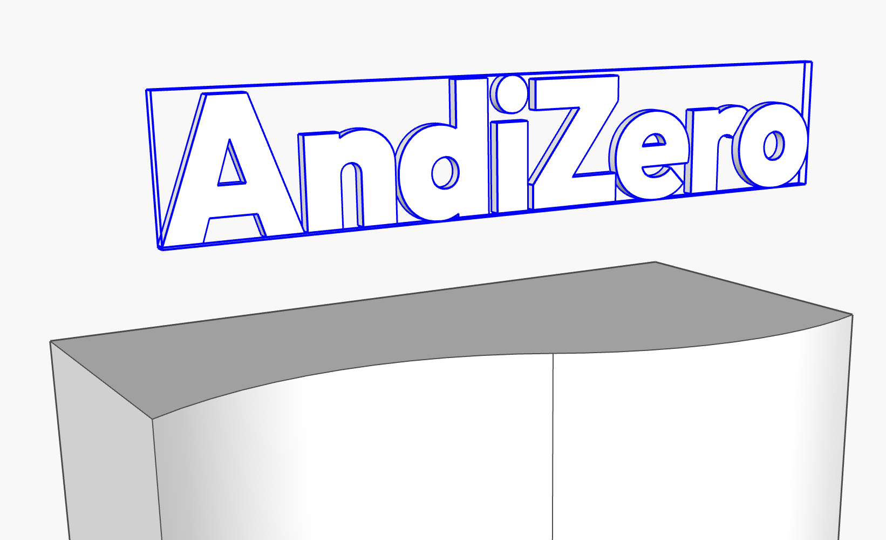
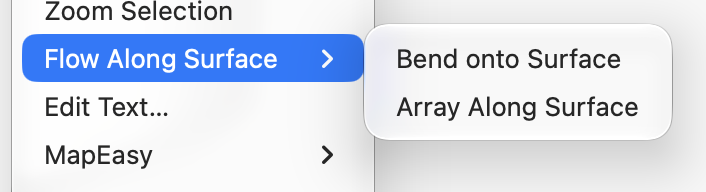
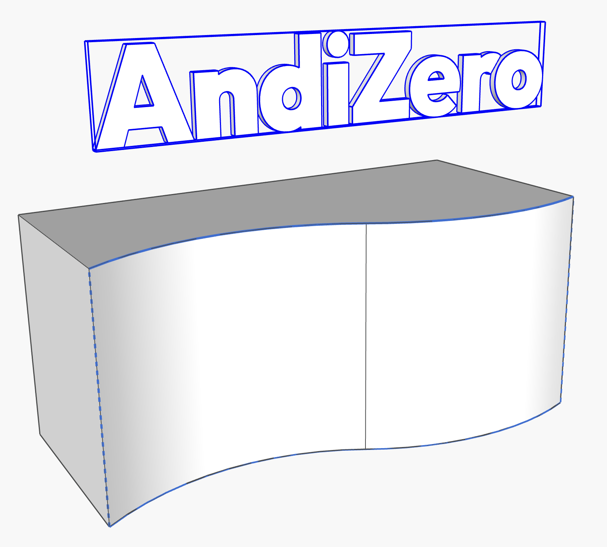
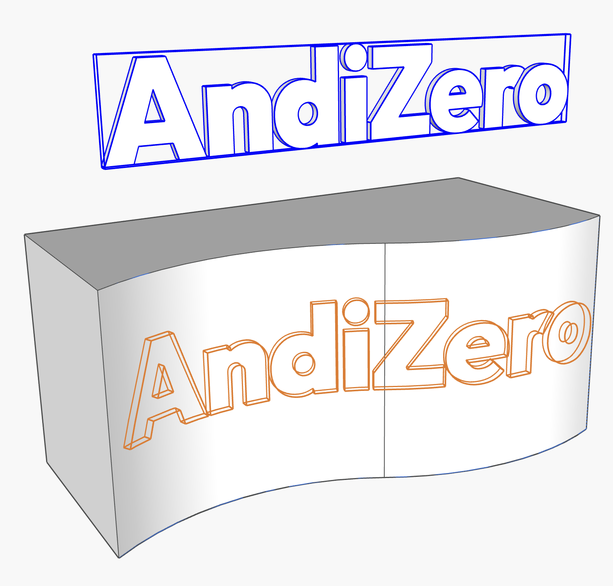
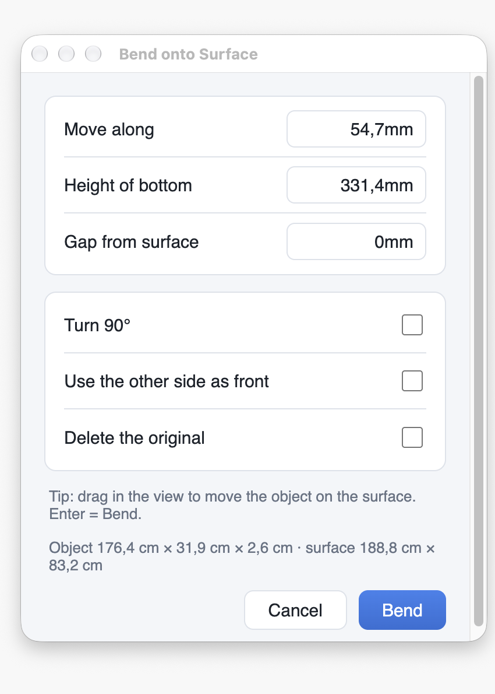
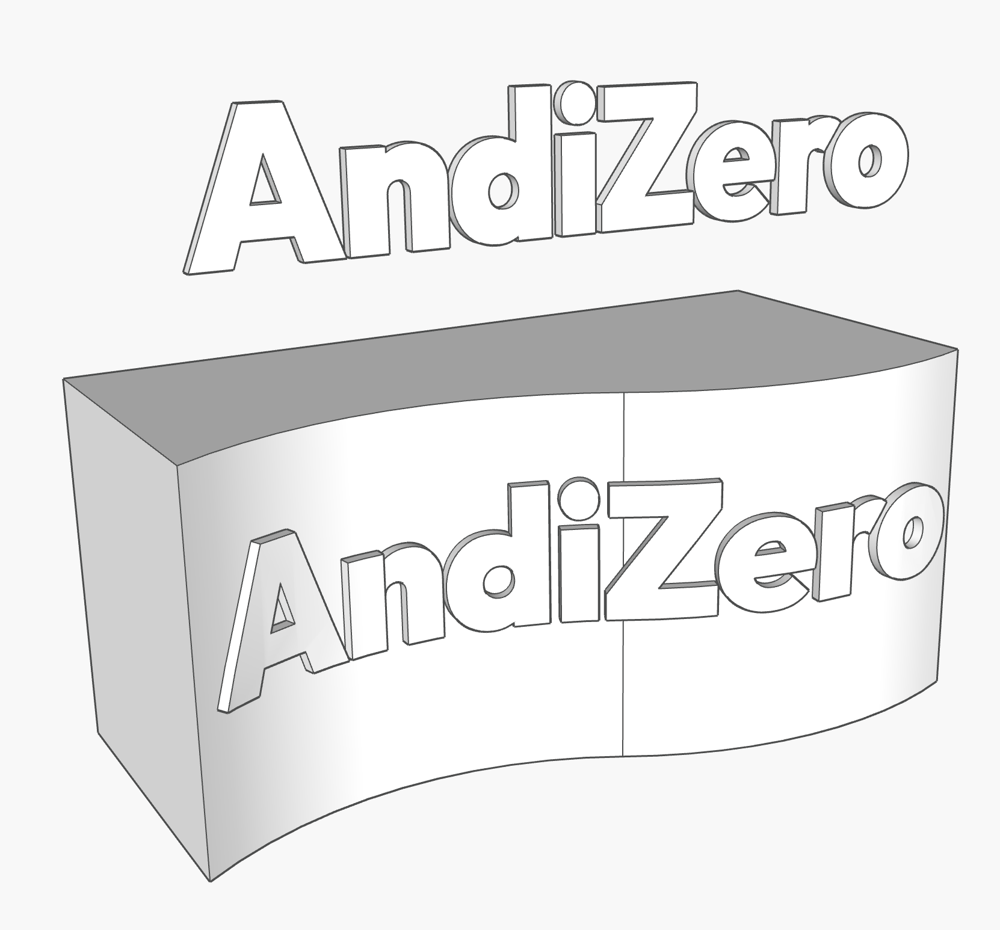
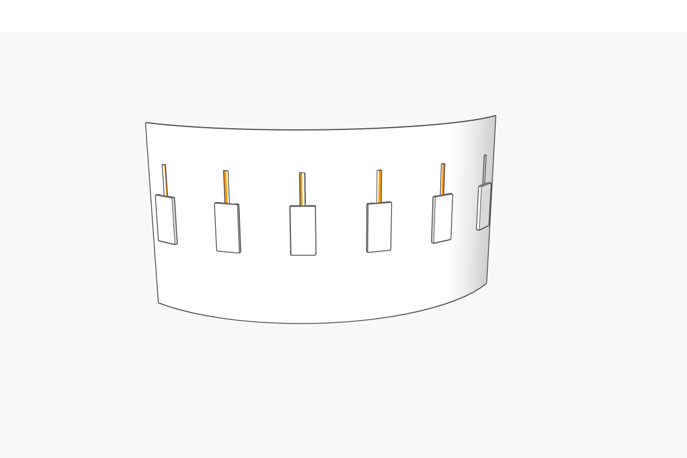

Flow Along Surface
Bend text and logos onto curved walls, or place copies along them.
Tekuk teks dan logo ke dinding lengkung, atau tempatkan copy di sepanjangnya.
1. Install1. Instalasi
- Download the
.rbzfrom the main page. - SketchUp: Extensions › Extension Manager › Install Extension… and choose the file.
- Find it under Extensions › Flow Along Surface, in the right-click menu of a selected object, or show the toolbar in View › Toolbars.
- Unduh
.rbzdari halaman utama. - SketchUp: Extensions › Extension Manager › Install Extension… lalu pilih filenya.
- Temukan di Extensions › Flow Along Surface, di menu klik kanan object yang dipilih, atau tampilkan toolbar di View › Toolbars.
2. How to Bend2. Cara Bend
Wrap 3D text, a logo or a panel onto a curved surface. Its length and thickness stay the same.
Tekuk teks 3D, logo, atau panel ke surface lengkung. Panjang dan tebalnya tetap.
Step 1Langkah 1
Select the object you want to bend, such as 3D text or a logo (a group or component).
Pilih object yang ingin ditekuk, misalnya teks 3D atau logo (group atau component).

Step 2Langkah 2
Right-click and choose Flow Along Surface › Bend onto Surface.
Klik kanan, lalu pilih Flow Along Surface › Bend onto Surface.

Step 3Langkah 3
Click the target surface. It is outlined in blue, and an orange preview of the bent object appears.
Klik surface tujuan. Surface ditandai garis biru, dan preview oranye hasil tekukan langsung muncul.

Step 4Langkah 4
Click and drag in the view to move the object along the surface.
Klik dan seret di viewport untuk menggeser object di atas surface.

Step 5Langkah 5
When it looks right, click Bend (or press Enter).
Kalau posisinya sudah pas, klik Bend (atau tekan Enter).

Step 6Langkah 6
Done. The bent copy is created as a new group. Your original object stays untouched, unless you ticked Delete the original.
Selesai. Hasil tekukan dibuat sebagai group baru. Object asli tetap utuh, kecuali opsi Delete the original dicentang.

3. Bend options3. Opsi Bend
| OptionOpsi | What it doesFungsinya |
|---|---|
| Move along | Slides the object along the curve from the point you clicked. 0 = centred on that point. Dragging in the view fills this in.Menggeser object sepanjang lengkung dari titik yang diklik. 0 = tengahnya tepat di titik itu. Drag di viewport mengisi angka ini. |
| Height of bottom | Height of the bottom of the object above the lowest edge of the surface.Tinggi bagian bawah object dari tepi bawah surface. |
| Gap from surface | Space between the surface and the back of the object. 0 = touching. A negative value sinks it in a little.Jarak antara surface dan bagian belakang object. 0 = menempel. Angka negatif membuatnya sedikit masuk ke surface. |
| Turn 90° | Runs the object up the surface instead of along the curve, for vertical text.Object berjalan naik ke atas, bukan sepanjang lengkung. Untuk teks vertikal. |
| Use the other side as front | Tick it when the result reads backwards or shows its back.Centang jika hasilnya terbaca terbalik atau sisi belakangnya yang menghadap keluar. |
| Delete the original | Removes the flat original after bending. Off by default.Menghapus object asli setelah ditekuk. Default tidak dicentang. |
The longest side of the object runs along the curve, the shortest side is its thickness, and its back sits on the surface. Seen from the front, text reads the right way round.
Sisi terpanjang object berjalan sepanjang lengkungan, sisi terpendek menjadi tebalnya, dan bagian belakangnya menempel di surface. Dilihat dari depan, teks terbaca dengan benar.
4. How to Array Along Surface4. Cara Array Along Surface
Place copies of an object along a curved surface, such as fence posts, lamps or panels.
Tempatkan copy object di sepanjang surface lengkung, misalnya tiang pagar, lampu, atau panel.
- Select the object you want to repeat, such as a fence post, a lamp or a panel (a group or component).
- Right-click and choose Flow Along Surface › Array Along Surface.
- Click the target surface. It is outlined in blue, and an arrow shows the direction the copies will run.
- Set the copies in the dialog: choose Count (number of copies) or Spacing (distance between copies), then adjust the start/end offset, height and gap. Orange boxes preview where each copy will go.
- When it looks right, click Place.
- Done. All copies are placed in one new group and turn with the curve. Your original object stays untouched, unless you ticked Delete the original.
- Pilih object yang ingin diperbanyak, misalnya tiang pagar, lampu, atau panel (group atau component).
- Klik kanan, lalu pilih Flow Along Surface › Array Along Surface.
- Klik surface tujuan. Surface ditandai garis biru, dan tanda panah menunjukkan arah urutan copy.
- Atur copy di dialog: pilih Count (jumlah copy) atau Spacing (jarak antar copy), lalu sesuaikan offset awal/akhir, tinggi, dan gap. Kotak oranye menunjukkan posisi setiap copy.
- Kalau sudah pas, klik Place.
- Selesai. Semua copy masuk ke satu group baru dan berputar mengikuti lengkungan. Object asli tetap utuh, kecuali opsi Delete the original dicentang.

5. Array options5. Opsi Array
| OptionOpsi | What it doesFungsinya |
|---|---|
| Count / Spacing | Count spreads that many copies evenly; Spacing places a copy every set distance.Count menyebar sejumlah copy secara merata; Spacing menaruh copy setiap jarak tertentu. |
| Centre the run | Spacing only: shares the leftover length equally at both ends.Khusus Spacing: sisa panjang dibagi rata di kedua ujung. |
| Start / End offset | Keeps the copies this far from the start and end of the surface.Menjaga copy sejauh ini dari awal dan akhir surface. |
| Height | Lifts the copies above the lowest edge of the surface.Mengangkat copy dari tepi bawah surface. |
| Gap from surface | Space between the surface and the back of each copy.Jarak antara surface dan bagian belakang tiap copy. |
| Turn with the surface | Each copy turns to face out from the curve. Turn it off to keep the object's own direction.Tiap copy berputar menghadap keluar dari lengkungan. Matikan agar arah object tetap seperti aslinya. |
| Turn 0° / 90° / 180° / 270° | Extra turn of every copy, when the object faces the wrong way.Putaran tambahan tiap copy, jika object menghadap ke arah yang salah. |
| Delete the original | Removes the original after placing the copies.Menghapus object asli setelah copy ditempatkan. |
6. Which surfaces work6. Surface yang didukung
Version 1 works on surfaces that bend one way only: curved walls, S-shaped counters, round columns, arches and flat walls. Domes, spheres and free-form surfaces are not supported yet, and the tool tells you so.
Versi 1 bekerja pada surface yang melengkung satu arah saja: dinding lengkung, counter bentuk S, kolom bulat, lengkungan plafon, dan dinding datar. Kubah, bola, dan bentuk bebas belum didukung, dan tool akan memberi tahu.
- Click the face you want: the blue outline shows the whole surface the tool found, from end to end.
- A surface made of smooth (soft) edges is read as one surface, and so are gentle hard-edged turns under 25°.
- The result follows the segments of your wall exactly, so a wall drawn with more arc segments gives a smoother bend.
- Klik face yang diinginkan: garis biru menunjukkan seluruh surface yang ditemukan tool, dari ujung ke ujung.
- Surface dengan edge halus (soft) dibaca sebagai satu surface, begitu juga belokan landai edge keras di bawah 25°.
- Hasilnya mengikuti segmen dinding dengan tepat, jadi dinding yang digambar dengan segmen arc lebih banyak memberi tekukan lebih halus.
7. Uninstall7. Uninstall
Extensions › Extension Manager › select Flow Along Surface › Uninstall.
Extensions › Extension Manager › pilih Flow Along Surface › Uninstall.
Start here: for first-time usersMulai dari nol
Stuck installing or using this extension? This part explains the basics in plain words. If you are comfortable with SketchUp, you can skip it.
Kesulitan memasang atau memakai extension ini? Bagian ini menjelaskan dasar-dasarnya dengan bahasa sehari-hari. Kalau sudah terbiasa dengan SketchUp, bagian ini bisa dilewati.
What you are installingApa yang Anda pasang
An extension is a small add-on that gives SketchUp a new tool. It comes as one file ending in .rbz. You do not open or unzip that file yourself; SketchUp installs it for you. Flow Along Surface is free.
Extension adalah program tambahan kecil yang menambah alat baru di SketchUp. Bentuknya satu file berakhiran .rbz. File itu tidak perlu dibuka atau diekstrak sendiri, karena SketchUp yang memasangnya. Flow Along Surface gratis.
Install it, step by stepCara memasang, langkah demi langkah
- On the main page, press Download. The file usually lands in your Downloads folder.
- Open SketchUp. In the menu bar at the top, choose Extensions › Extension Manager.
- Press Install Extension…, find the
.rbzfile in your Downloads folder, and open it. - If SketchUp asks whether to install, choose Yes.
- Close SketchUp and open it again.
- Look in the Extensions menu. The name Flow Along Surface should be there. That means it worked.
- Di halaman utama, tekan Unduh. File biasanya masuk ke folder Downloads.
- Buka SketchUp. Di menu bar paling atas, pilih Extensions › Extension Manager.
- Tekan Install Extension…, cari file
.rbzdi folder Downloads, lalu buka. - Jika SketchUp bertanya apakah ingin memasang, pilih Yes.
- Tutup SketchUp lalu buka lagi.
- Lihat menu Extensions. Nama Flow Along Surface seharusnya ada di sana. Artinya berhasil.
Words you will meetIstilah yang akan Anda temui
| WordIstilah | What it meansArtinya |
|---|---|
| Group / Component | Faces and edges tied together as one object. 3D text made with Tools › 3D Text is already a group.Face dan edge yang diikat menjadi satu object. Teks 3D dari Tools › 3D Text sudah berupa group. |
| Surface | The face you bend onto or place copies along, such as the front of a curved wall.Face tujuan tekukan atau tempat copy diletakkan, misalnya bagian depan dinding lengkung. |
| Viewport | The big drawing area of SketchUp where your model is shown.Area gambar besar di SketchUp tempat model ditampilkan. |
Your first try (about 5 minutes)Percobaan pertama (sekitar 5 menit)
- Draw an arc with the Arc tool (A), then press P for Push/Pull and pull it up into a curved wall.
- Choose Tools › 3D Text, type a word, and place it near the wall.
- Press Space for the Select tool and click the text once.
- Right-click the text and choose Flow Along Surface › Bend onto Surface.
- Click the curved face of the wall. Drag in the view until the orange preview sits where you want it, then press Enter.
- The bent text appears on the wall as a new group. Not right? Press Undo.
- Gambar arc dengan Arc tool (A), lalu tekan P untuk Push/Pull dan tarik ke atas menjadi dinding lengkung.
- Pilih Tools › 3D Text, ketik sebuah kata, lalu letakkan di dekat dinding.
- Tekan Space untuk Select tool lalu klik teksnya sekali.
- Klik kanan teks, lalu pilih Flow Along Surface › Bend onto Surface.
- Klik face lengkung dinding. Seret di viewport sampai preview oranye ada di posisi yang diinginkan, lalu tekan Enter.
- Teks yang tertekuk muncul di dinding sebagai group baru. Kurang pas? Tekan Undo.
10mm or 2cm. A bare number uses the unit of your model.Tips Saat isian meminta panjang, ketik angkanya beserta satuan, misalnya 10mm atau 2cm. Angka tanpa satuan memakai satuan model Anda.If something does not show upKalau ada yang tidak muncul
| ProblemMasalah | What to doYang bisa dicoba |
|---|---|
| The menu is not in Extensions.Menunya tidak ada di Extensions. | Close and reopen SketchUp. Then open Extensions › Extension Manager, go to the Manage tab and make sure Flow Along Surface is switched on.Tutup lalu buka lagi SketchUp. Setelah itu buka Extensions › Extension Manager, masuk ke tab Manage, dan pastikan Flow Along Surface dalam keadaan aktif. |
| Bend onto Surface is greyed out.Bend onto Surface berwarna abu-abu. | Select exactly one group or component first. Loose faces cannot be bent; make them a group.Pilih tepat satu group atau component dulu. Face lepas tidak bisa ditekuk; jadikan group dulu. |
| Nothing turns blue when I move over the wall.Tidak ada yang berwarna biru saat kursor di atas dinding. | Move over the face itself, not an edge. If a message appears, read it: the surface may bend in two directions.Arahkan ke face-nya, bukan edge. Jika muncul pesan, baca pesannya: surface mungkin melengkung dua arah. |
| The result is not what I wanted.Hasilnya tidak sesuai harapan. | Press Undo once and try again with other values.Tekan Undo satu kali, lalu coba lagi dengan angka lain. |
Still stuck? Email andidewanto@gmail.com with your SketchUp version and a short description.
Masih bingung? Kirim email ke andidewanto@gmail.com dengan versi SketchUp Anda dan penjelasan singkat.